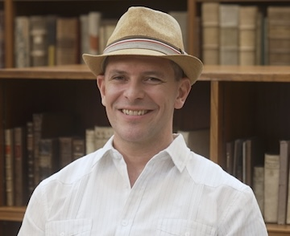

Patrick Shafto

My lab is here. My cv in pdf format.
Professor of Math and Computer Science
I am Professor in the
Department of Mathematics and Computer Science at Rutgers - Newark. I have appointments in
Psychology,
Rutgers Business School, and the
Center for Molecular and Behavioral Neuroscience (CMBN) at Rutgers Newark and am an affiliate member of the
Department of Computer Science and the
Rutgers Center for Cognitive Science (RUCCS) in New Brunswick.
Program Manager, DARPA (2023-present)
I am a program manager at
DARPA in
I2O developing and leading investigations into the mathematical and scientific foundations of AI to address major societal challenges.
Founder and Scientist-at-large, Redpoll (2019-present)
I am a founder and Scientist-at-large at
Redpoll, a company dedicated to human-centered machine learning and AI for safety-intensive applications.